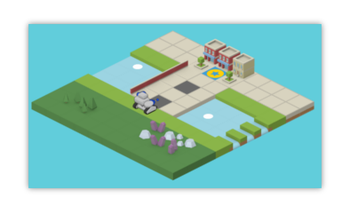

Dans ce premier niveau, tu vas découvrir le fonctionnement du jeu et commencer à déplacer ton robot !

Sur le côté gauche de l’écran, tu peux voir ton personnage et l’univers dans lequel il va évoluer.
En suivant tes instructions, ton robot va se déplacer et attaquer tout autour de la carte de jeu.
Le côté droit est dédié à ton code, c’est le code que tu vas taper dans cette fenêtre qui va décider des actions de ton robot.
Dans cette partie fenêtre te seront aussi indiqués des conseils pour t’améliorer, et les erreurs possibles dans le code que tu écris !
Pour les premiers niveaux tutoriels, ton objectif sera d’atteindre la case finale bleue marquée d’une étoile. Pour que ton robot comprenne ton objectif, tu devras parler dans son langage en lui écrivant des instructions.
Par exemple :
deplacer(HAUTDROIT)
Déplacera ton robot vers la case en haut à droite. Facile, non ?
Chaque procédure permet d’effectuer des actions spécifiques, et peut être utilisée plusieurs fois dans un programme.
HAUTDROIT est un paramètre, il se place entre les parenthèses d’une procédure pour changer son résultat.
Les autres directions possibles pour cette procédure sont les suivantes :
BASDROIT
BASGAUCHE
HAUTGAUCHE
Le code que tu écris est lu de haut en bas pas ton robot, et il ne peut y avoir qu’une commande par ligne.
Pour ce premier niveau tu devras écrire le programme permettant de déplacer ton robot de la case départ jusqu’à la case d’arrivée.
Attention ! Une fois que ton code est validé tu ne peux plus le modifier pendant que ton robot l'exécute !